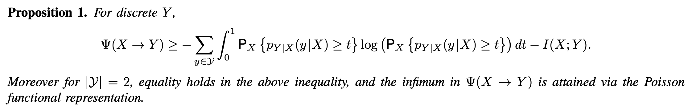
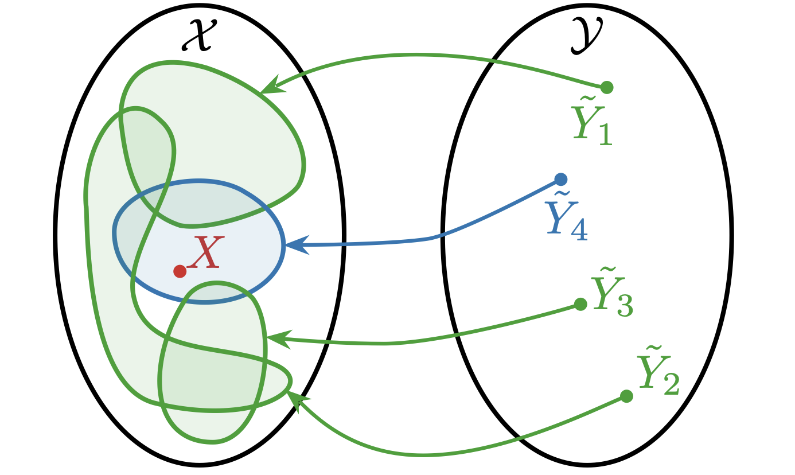
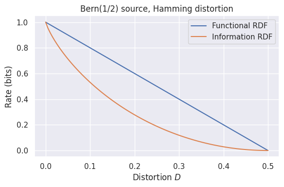

Lossy data compression with stochastic codes and their characterisation via the functional information
Gergely Flamich
06/07/2026
paper now available on Arxiv!
In Collaboration With
what is a stochastic code?
lossless compression
- Source: \(X \sim P_X\)
- Code: \(C(x) \in \{0, 1\}^*\)
- Decode: \[ C^{-1}(C(x)) = x \]
- Measure of efficiency: \(\mathbb{E}[\vert C(X) \vert]\)
- Entropy code: \[\mathbb{E}[\vert C(X) \vert] = \mathbb{H}[P_X] + \mathcal{O}(1)\]
stochastic codes
- Source: \(X \sim P_X\)
- Perturbation: \(P_{Y \mid X = x}\)
- Shared randomness: \(Z \sim P_Z\)
- Code: \(C(x, z) \in \{0, 1\}^*\)
- Decode: \[ D(C(x, Z), Z) \sim P_{Y \mid X = x}\]
common randomness in practice

a general stochastic code: rejection sampling

Fact: \((x, y) \sim \mathrm{Unif}(A) \, \Rightarrow\, x \sim P\)
a general stochastic code: rejection sampling

the objective
bounds
Li and El Gamal: letting \(I = I[X; Y]\),
\[ I \leq R^* \leq I + \log(I + 1) + 4 \]
Main result in this talk:
\({\color{red} F(X \to Y)}\) - functional information, then: \[ F(X \to Y) \leq R^* \leq F(X \to Y) + 2.45 \]
why care?
learned transform coding

Pick \(f(x) + \epsilon\): reparameterisation trick!
compressing differentially privacy mechanisms
Privacy mechanism \(Y \mid X = x\)

the functional information
The width function
\(Q \ll P\) with \(r = dQ/dP\)
\(w(h) = P(r \geq h)\)

representing divergences
\(w\) is a PDF! Hence, let \(H \sim w\).
What about \(h[H]\)?
channel simulation divergence
\[ D_{CS}[Q || P] \triangleq h[H] \]
Some properties:
- non-negative
- \(D_{CS}[Q || P] = 0\) iff \(Q = P\)
- DPI
- jointly convex in \((Q, P)\)
more csd properties
\(\mathrm{KL} = D_{KL}[Q || P]\) and \(\mathrm{CS} = D_{CS}[Q || P]\):
Furthermore:
\(\mathrm{TV}[Q || P] \leq 1 - 2^{D_{CS}[Q || P]}\)
\(\Lambda(X) = \log |\mathcal{X}| - D_{CS}[P_X || \mathrm{Unif}(\mathcal{X})]\)
functional information
Analogy with MI for \(P_{X, Y}\):
"Correct" definition:
\[ F[X \to Y] \triangleq \mathbb{E}_Y [D_{CS}[P_{X \mid Y} || P_X]] \]
FI properties
\(F[X \to Y] \triangleq \mathbb{E}_Y [D_{CS}[P_{X \mid Y} || P_X]]\)
Then:
- \(F[X \to X] = H[X]\) for \(X\) discrete
- \(F[X \to Y] = 0\) iff \(X \perp Y\)
- \(F[X \to Y] = I[X; Y]\) iff \(X \to Y\) singular
- concave in \(P_X\), convex in \(P_{Y \mid X}\)
\[F[X \to (Y, Z)] = F[X \to Y] + F[X \to Z \mid Y] + \Theta(1)\]
main result
Then, under mild assumptions
\[ F(X \to Y) \leq R^* \leq F(X \to Y) + 2.45 \]

achievability via the ring toss code
a general stochastic code: rejection sampling

Fact: \((x, y) \sim \mathrm{Unif}(A) \, \Rightarrow\, x \sim P\)
a general stochastic code: rejection sampling
encoding the index
\(N(x) \sim \mathrm{Geom}(1/M)\)
but: we haven't used the common randomness!
put \(w_y(h) = P_X(dP_{X \mid Y = y}/dP_X \geq h)\)
\[ Q_{N \mid Z}(n \mid z) \triangleq w_{y_k}(M u_k) \prod_{i=1}^{n-1} (1 - w_{y_i}(M u_i)) \]
interpretation
\(\frac{dP_{X \mid Y}}{dP_X}(x \mid y) = \frac{dP_{Y \mid X}}{dP_Y}(y \mid x) \geq M u\)
RS acceptance criterion!
\(w_y(M u) = P_X\left(\frac{dP_{X \mid Y = y}}{dP_X} \geq M u\right)\)
probability that \((y, u)\) acceptanced!
for singular channels
\(X \to Y\) singular: \(\frac{dP_{Y \mid X}}{dP_Y}(y \mid x) = g(y)\mathbb{1}[x \in A_y]\)

corollaries
\[ F(X \to Y) \leq R^* \leq F(X \to Y) + 2.45 \]
Tighter MI bound:
\(I(X; Y) \leq R^* \leq I(X; Y) + \log(I(X; Y) + 1) + 3.45\)
Recover asymptotic behaviour:
\(\lim_{n \to \infty}\frac{F(X^n \to Y^n) - I[X^n; Y^n]}{\log n} = \begin{cases} 0 & \text{if } X \to Y \text{ singular}\\ 1/2 & \text{o.w.} \end{cases}\)
application: rate-distortion
the objective
One-shot rate-distortion function:
applying the FI
Functional rate-distortion function
Then:
\(R_F(\delta) \leq R_O(\delta) \leq R_F(\delta) + 3.45\)
an example

Take-home messages
- tight rate bound using functional information
- recovered all currently known bounds
- tight bound of rate-distortion function
Open questions
- Interpretation of CSD and FI
- Axiomatic derivation of FI?
- Machine learning applications
- Applications to channel coding?
- Other applications?
check out the ring toss code paper on arXiv!